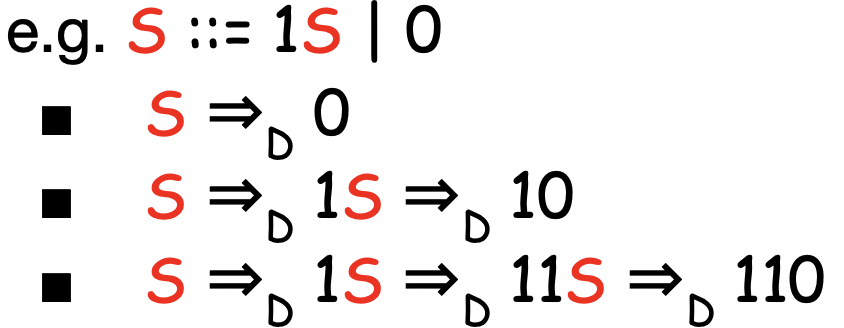
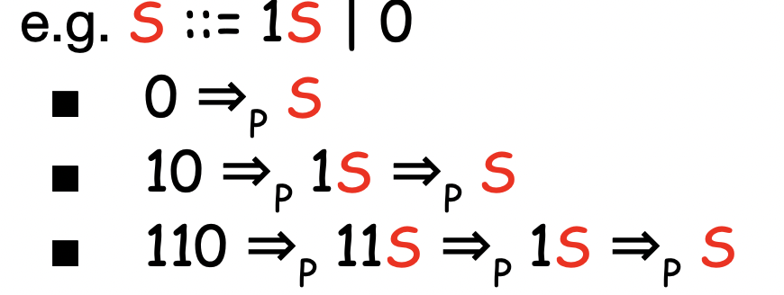
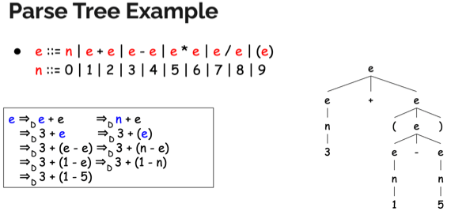
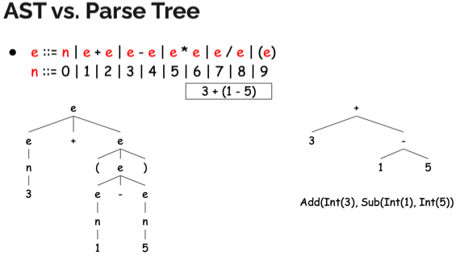

충남대학교 컴퓨터공학과 이성호 교수님의 "프로그래밍 언어 개론" 강의를 필기한 내용입니다.
다소 잘못된 내용과 구어적 표현 이 포함되어 있을 수 있습니다.
Lexer , Parser
- Lexer : 문자열 → 토큰
- Parser : 토큰 → Abstract Syntax Tree(AST)
Context Free Grammar(CFG)소개
- 대부분은 이걸로 무한한 문자열 집합을 표현하며
- 일부의 언어가 더 고급진 CSG(Context Sensitive Grammar)을 사용한다
- 하지만 얘의 경우에는 많은 용량을 사용해 파서에게 부담을 안겨준다
- CFG는 정규표현식보다 더 많은 표현력을 가진다
- 따라서 정규표현식으로 표현 가능한 문자열을 CFG로 표현 가능하지만 그 반대는 아니게 된다
- 하지만 정규언어가 더 간결하기 때문에 lexer의 경우에는 정규식을 쓰고 parser에서는 정규언어로는 부족하기 때문에 CFG를 쓰는 것
CFG 표현
- <> : 논 터미널 (다른 기호들로 치환되는 기호)
- 경유지 같은 느낌
- → : 치환이라는 의미
- 좌측을 우측으로 바꿔치기할 수도 있고 우측을 좌측으로 바꿔치기 할 수도 있음
- | : or
- 0, 1, E : 터미널 (다른 기호들로 치환되지 않는 기호)
- 종착지같은 느낌
CFG 수학적 표현
- Σ : 터미널들의 유한집합
- N : 논터미널의 유한집합
- P : 규칙의 집합
- ‘ → ‘ 좌측의 논터미널을 우측의 터미널, 논터미널의 조합으로 치환 가능하다
- 이때의 ‘ → ‘쌍을 규칙이라고 하는 것
- S : 시작 논터미널 (시작 기호)
- 당연히 S는 N의 원소이다
Backus-Naur form - CFG를 컴퓨터 내에서 기술하는 방법
- → 를 ::= 로 기술함
- 논터미널을 기술할때는 <>표기는 생략함
- =의 좌측은 무조건 논 터미널로 인식
CFG로 문자열 만들기 - Derive

- 시작 논터미널로부터 시작해
- 규칙에 따라 논터미널을 치환한다
- 이 규칙에 따른 치환을 유도라고 한다
- 그래서 더이상 치환할 논터미널이 없으면 그게 만들어낸 문자열이 된다
- 유도는 =>D 로 표현한다
- 약간 치환되는 과정을 나타내는 것
문자열을 CFG로 판별하기

- 단순하다. 유도의 반대과정을 거치면 된다
- 즉, 오른쪽을 왼쪽으로 치환하는 과정을 반복해서 시작 터미널이 나오면 CFG에 속한다고 표현할 수 있는 것
- 이 반대과정은 기호로 =>p로 표현한다
- 유도(Derivation)의 반대는 파스(Parse)
- 하지만 이 파싱의 알고리즘은 CFG에서는 제공하지 않는다 (형태만을 지정하므로)
- LL(k), LR(k)등의 알고리즘이 존재한다
- 다행히도 파서 생성기가 존재한다 (CFG를 가지고 파서를 자동으로 만들어주는 놈)
- C언어에서 Bison같은놈이 이런 기능을 한다
Parse tree(Derivation tree)
- 이 유도/파스의 과정을 Tree 자료구조로 표현한 것이 Parse(Derivation) tree이다

- 각 노드는 터미널 혹은 논터미널로 되어 있다
- 루트 노드는 시작 논터미널이고 중단 노드는 논터미널, 리프 노드 만이 터미널이 된다
- 부모와 인접한 자식들간의 관계는 좌측 논터미널과 우측 기호들 간의 관계와 일치한다 (자식이 많을 경우 하나하나 생각하는게 아니라 왼쪽 → 오른쪽으로 읽은 것이 우측 기호가 되는 것)
- 리프 노드를 왼쪽 → 오른쪽으로 읽으면 유도된 문자열 이 나오게 되는 것
- 트리를 거꾸로 읽으면 Parse의 과정 을 알게 되는 셈이다
유도의 종류
- 좌측 우선 유도(Leftmost derivation) : 왼쪽부터 차례로 유도해 나가는 것
- 우측 우선 유도(Rightmost derivation) : 이번에는 오른쪽에서부터 차례로 유도해나가는 것
- 근데 어떻게 유도하냐에 따라 Parse tree가 달라지고 이것은 결과적으로 AST에도 영향을 끼쳐 비효율적인 동작을 하게 될 수도 있다
- 대신 유도 방법이 정해지면 항상 동일한 Parse tree가 나와야 한다
- 만약에 여러개가 나온다면 문법을 잘못 정의한 것(모호하게 정의한 것)
- 하나의 유도방법에는 하나의 Parse tree만
- 문법의 모호성이 나오지 않게 신중하게 작성해야 한다
- tip : 좌측의 논터미널이 우측에 두번 이상 나오도록 치환규칙을 짜면 문제가 생기던데
AST(Abstract Syntax Tree)

- AST랑 Parse tree와는 다르다
- Parse tree는 실제 문자열이 유도되는 모든 과정을 나타내는 개념적인 과정이고 (따라서 CFG가 있으면 Parse Tree를 유도해낼 수 있는거)
- AST는 parse tree에서 언어의 구조적(동작), 내용적(값) 구문 구조만을 포함시켜 우리가 정의한 규칙을 따른다
- 어딘가에서 유도되는게 아니고 정의하는 것이여라
- Parse tree를 가지고 우리가 단순화시켜서 정의하는 것이다
- 따라서 Parser는 Parse tree를 반환하는게 아니고 AST로 반환한다
- 이제 이 AST를 가지고 컴파일러나 인터프리터가 실행하게 된다